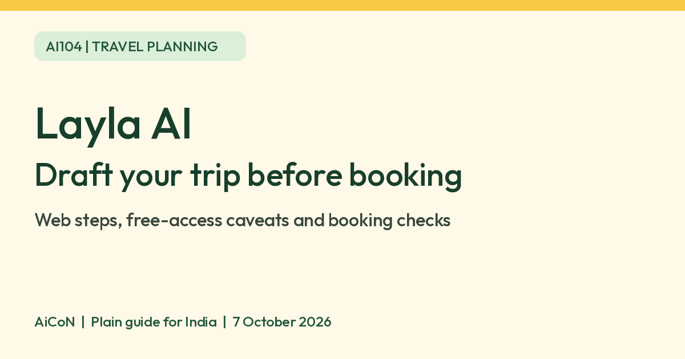

Layla AI: draft a trip plan before you book
Layla AI is a conversational trip planner. Share a destination, dates, budget and travel style to get a proposed itinerary. Treat the plan as a draft: verify travel facts and the price of every booking before paying.

What does Layla AI do?
Layla describes its service as an AI travel agent and trip planner. It can propose day-by-day itineraries covering places to visit, flights, hotels, activities and dining. Its official pages also offer help from human travel experts.
This guide is about preparing a plan, not endorsing a booking, guaranteeing a fare or claiming the service finds the cheapest possible trip. Layla's statement that it uses live prices and availability is a vendor claim; we did not verify an itinerary against actual supplier inventory.
How Indian travellers could try it
As an editorial example, you could ask for a relaxed three-day trip from Kochi to a destination you choose, with a budget in INR and no overnight travel. State the number of people, food preferences and the pace you want. If a condition matters, write it explicitly rather than hoping the AI assumes it.
We verified the public website and chat page. India iPhone availability could not be confirmed: the India store lookup returned no app and the India page did not resolve in our check. This guide therefore recommends the web route only, not an India app download. We did not test access from an Indian network, Malayalam replies or Indian payment checkout.
Build a draft itinerary, step by step
- Open layla.ai and use its chat route.
- Tell it where you want to go and where you are travelling from.
- Give your dates or approximate time window, who is coming and what kind of trip you want.
- State your budget in INR and explain whether it includes flights, hotels, food and activities. Add constraints such as travelling with children or avoiding long drives.
- The current chat page has a trip checklist covering destination, origin, travellers, timing and preferences. Fill the gaps by chatting.
- Select Generate my trip when you are ready. The page says it can fill missing details, so inspect any assumptions it makes.
- Ask for changes to the draft: fewer stops, more rest time, different accommodation or a revised route.
- Before booking, check every important detail with the airline, hotel, attraction or official transport source.
These steps follow the official FAQ and live chat-page checklist. We did not generate a test itinerary or make a booking.
Free access and paid travel
| Free verdict | Layla's official FAQ offers free trip-planning tools with optional upgrades. Free access does not mean flights, hotels or activities are free. |
|---|---|
| Conflicting wording | The homepage says there is no subscription fee, but the separate FAQ describes a paid premium upgrade and the US app listing describes subscriptions. We do not claim unlimited free access across every platform. |
| Exact limit | A fixed current free-message or itinerary allowance was not verified. Follow the limit and price shown in your own session. |
| Paid price | No current tax-inclusive India price was verified, so no paid INR figure is quoted here. Check the billing period and renewal conditions before upgrading. |
| Bookings | Travel purchases cost money. Verify the supplier, total, baggage, cancellation rules and final dates before agreeing. |
| India | Public web pages verified. India app listing, regional account access and checkout were not confirmed. |
Checks that an AI itinerary cannot replace
- Verify visa and passport requirements on government or consular sources.
- Check current opening hours, closure days and ticket availability directly.
- Confirm road and transit times for your actual route. A list of attractions is not proof the day is practical.
- Check the final price, currency, taxes, baggage and cancellation cost at checkout.
- Do not paste passport numbers, payment-card details or other secrets into planning chat.
Layla's chat page itself says to check important information. A draft can be useful even when individual details need correction. Keep any booking commitment separate from the planning conversation.
Frequently asked questions
Is Layla entirely free?
Free planning tools are advertised, but official pages disagree about subscriptions and optional upgrades. Do not assume unlimited free use.
Can it book my trip?
Layla says AI and human travel experts can help with bookings. This guide does not verify supplier inventory or recommend paying without checking the final details.
Can I use the app in India?
We could not confirm India's app listing. Use the official web route if it is accessible to you.
Does it support Malayalam?
Malayalam output quality and support were not verified.
Are the proposed prices guaranteed?
No guarantee is made here. Confirm availability and the final payable amount with the supplier before booking.
Sources: Official homepage, Official FAQ, Live planning chat, US app listing for subscription context only. Checked 7 October 2026.